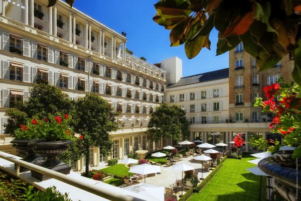
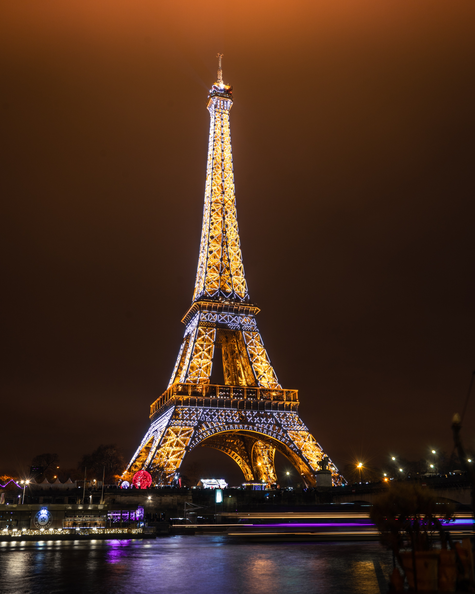
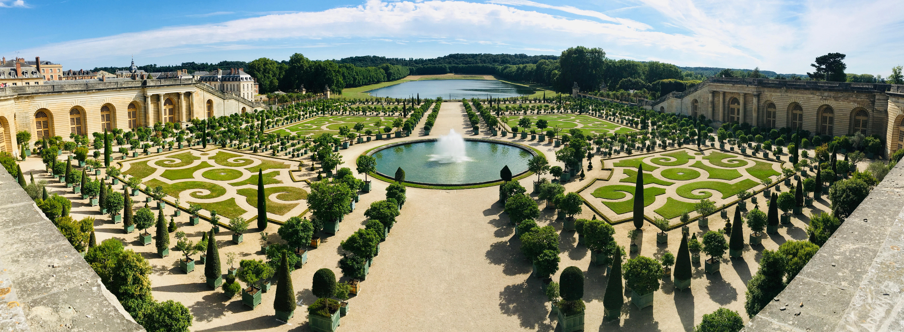
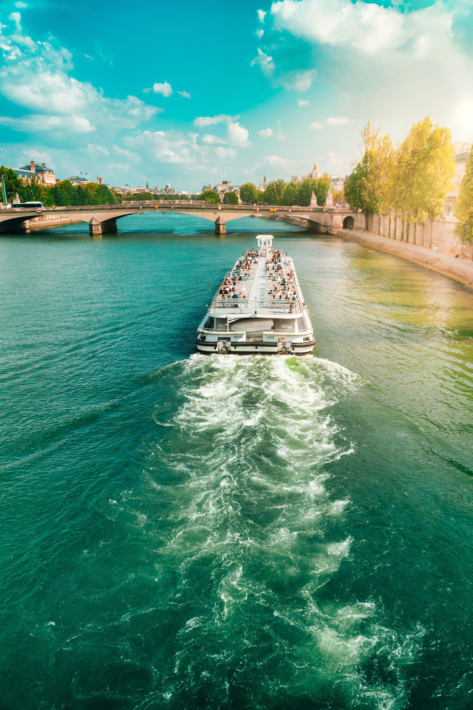
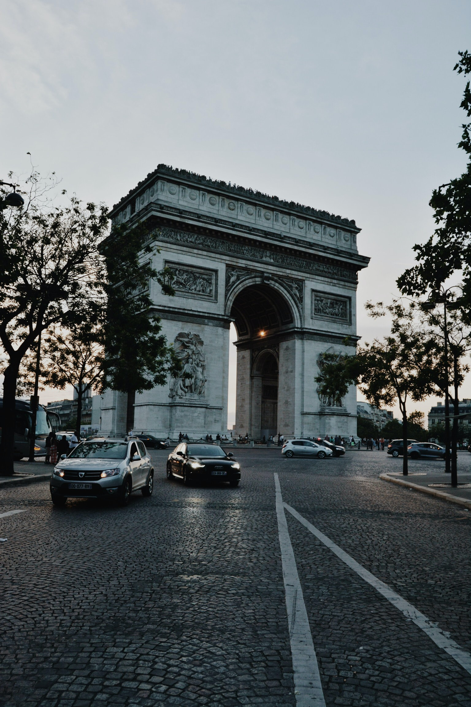
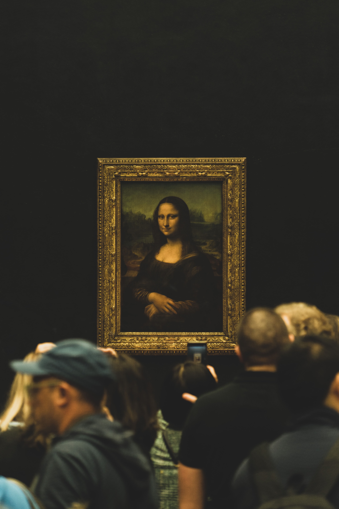
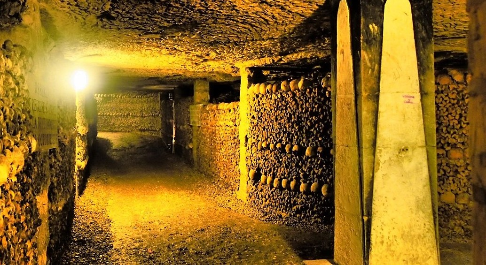
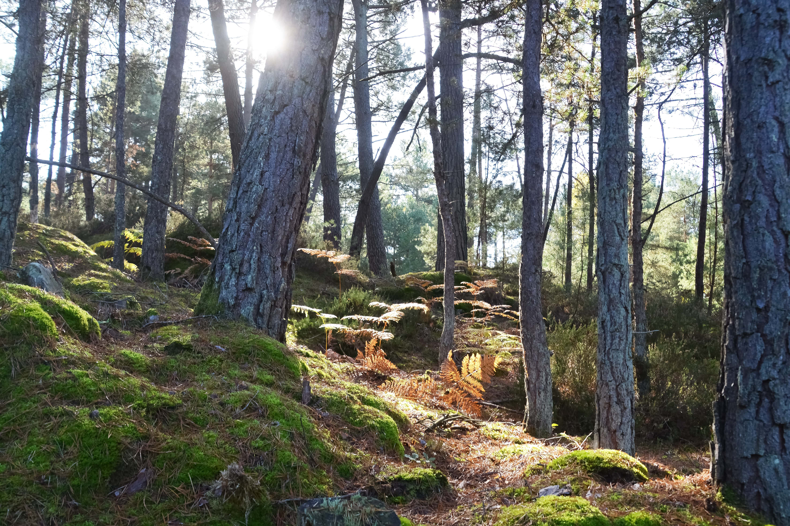

Reserve with $100
Le Bristol Paris Hotel
Stay in one of the best hotels in Paris, live a luxury experience without overspending.
Additional plans
Explore Paris with us
Plan for couples

Eiffel Tower
With this entrance ticket to the second floor of the Eiffel Tower you will see spectacular views of Paris from its most emblematic monument. Plus, you'll skip the endless lines.

Palace of Versailles
On this excursion to the Palace of Versailles from Paris we will get to know this luxurious palace complex declared World Heritage Site more than 30 years ago. You will be able to stroll through its beautiful gardens.

Seine River
By day or by night, cruising the Seine River by boat is an essential experience to discover the beauty of Paris from a unique perspective. Panoramic view and English speaking guide included.

Arc de Triomphe
Guided tour of the triumphal arch where you can learn about its history and all the curious details about it. Photoshoot included.
Plan for adventurers

Museum of Louvre
We will visit one of the most important art galleries in the world, where great works of art by artists such as Da Vinci, Tiziano or Delacroix. of artists such as Da Vinci or Delacroix. Recommended for Art History lovers!

Catacombs of Paris
Guided tour of the most famous cemetery in Paris, with more than 200 years of existence, imagine the stories full of adventure that can be there!

Fontainebleu Forest
Guided excursion to the forest of Fontainebleu about 60 km from Paris, you can do activities such as mountain biking, camping and so on.